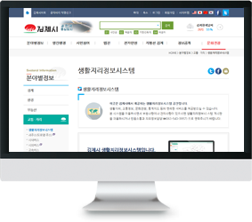
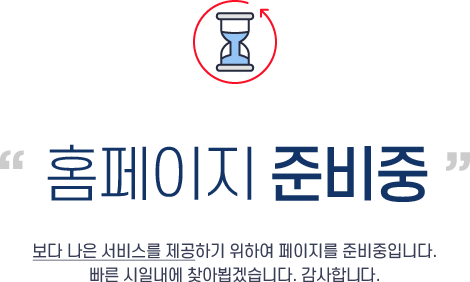

텝메뉴 : basic_tab (기본 4개정렬, 기타 ul class="col2~col5")
텍스트
기본텍스트 : basic_p
01 넘버링
세종 어제 훈민정음 우리나라의 말이 중국과 달라 문자(한자)와 서로 통하지 아니하여 이런 까닭으로 어리석은 백성이 말하고자 할 바가 있어도 마침내 제 뜻을 능히 펴지 못하는 사람(경우)이 많으니라 내 이를 위하여 가엾게 여겨 새로 스물여덟 자를 만드노니 사람마다 하여금 쉬이 익혀 날로 씀에 편안케 하고자 할 따름이니라
목록스타일
basic_ul
- 기타 콘텐츠영역 링크 사용 : txt_link
- 콘텐츠 내용중 링크가 있을시 사이트명과 함께 포함하여 네이버 (http://www.naver.com)제공이 됩니다.
- 텍스트 정렬
좌측정렬 txt_left
중앙정렬 txt_center
우측정렬 txt_right
- 텍스트 컬러
강조폰트 컬러 fc_red
강조폰트 컬러 fc_blue
- ※ 특문사용시 블릿이 필요없을경우 : li_none
basic_dl
- 타이틀
- 리스트1
-
- 리스트 1
- 리스트 2
- 리스트 2
- 리스트 1
박스스타일
basic_box
세종 어제 훈민정음 우리나라의 말이 중국과 달라 문자(한자)와 서로 통하지 아니하여 이런 까닭으로 어리석은 백성이 말하고자 할 바가 있어도 마침내 제 뜻을 능히 펴지 못하는 사람(경우)이 많으니라 내 이를 위하여 가엾게 여겨 새로 스물여덟 자를 만드노니 사람마다 하여금 쉬이 익혀 날로 씀에 편안케 하고자 할 따름이니라
basic_box2
basic_box3 / info_txt
알려드립니다.
notice_box : 공지사항 문구...
세종 어제 훈민정음 우리나라의 말이 중국과 달라 문자(한자)와 서로 통하지 아니하여 이런 까닭으로 어리석은 백성이 말하고자 할 바가 있어도 마침내 제 뜻을 능히 펴지 못하는 사람(경우)이 많으니라 내 이를 위하여 가엾게 여겨 새로 스물여덟 자를 만드노니 사람마다 하여금 쉬이 익혀 날로 씀에 편안케 하고자 할 따름이니라
단 나누기...? vertical_box
넓이 : wi20~wi90

청소년의 균형적 성장을 위하여 청소년의 능동적 참여하여 심신을 단련하고 자질을 배양하며, 다양한 취미를 개발하고, 정서를 함양할 뿐만 아니라 사회봉사활동을 통해 배움을 실천하는 조직적인 체험활동을 청소년수련활동이라 한다.
청소년수련시설은 이러한 수련활동에 필요한 여러가지 시설, 설비, 프로그램 등을 갖추고, 청소년지도자의 지도하에 체계적이고 조직적인 수련활동을 실시하는 시설을 말한다. 수련시설은 단순히 외형적 요소인 시설, 설비 또는 공간만을 지칭하는 것은 아니며, 그 시설에서 운영되는 수련거리와 이를 기획ㆍ운영하며 청소년을 지도하는 청소년지도자의 3가지 요소를 포함한 것이다
청소년기본법에서는 청소년수련시설을 생활권수련시설(청소년수련관, 청소년문화의집), 자연권수련시설(청소년수련원, 청소년야영장), 그리고 유스호스텔로 구분ㆍ운영되어 왔었으나 2005년부터는 새로 제정된 청소년활동진흥법에 의해 청소년수련시설 6종류(청소년수련관, 청소년수련원, 청소년문화의집, 청소년특화시설, 청소년야영장, 유스호스텔)와 청소년이용시설로 구분된다.
청소년활동진흥법 제10조에서는 청소년활동시설의 종류를 『청소년수련시설과 청소년이용시설』로 구분하고 있으며, 그 설치와 운영은 국가와 지방자치단체는 물론 법인, 단체 또는 개인 등 민간인도 할 수 있도록 되어 있다. 다만, 민간의 경우에는 시장‧군수의 허가를 받아 설치ㆍ운영하도록 되어 있다.
버튼 및 링크
큰버튼 주로 하단에 사용 - 영역 여백 및 가운데정렬 : basic_btn
새창 : btn_new이동 : btn_go다운로드 : btn_down
작은버튼 상단 및 게시판 내 사용
새창 : sbtn_new이동 : sbtn_go다운로드 : sbtn_down
테이블
테이블 한번감싸기(모바일 스크롤) : over_table
기본 테이블 : basic_table / over_info 스크롤 가능하다는 문구(tablet까지 보임)
좌우로 이동이 가능합니다.
| 이름 | 직위 | 전화번호 | 담당업무 |
|---|---|---|---|
| 홍길동 | 주무관 | 123-1234 | 포인트 배경색 사용시 : point_bg |
| 홍길동 | 주무관 | 123-1234 | 일부 왼쪽 정렬시 : txt_left |
| 김영희 | 주무관 | 123-1235 |
|
| 표 안에 | 버튼이 있을때 | 버튼및링크 참조 | 바로가기다운로드 |
전체 왼쪽정렬시 : basic_table table_left
| 이름 | 직위 | 전화번호 | 담당업무 |
|---|---|---|---|
| 왼쪽메뉴가 있으면 | 내용이 많으면 | 내용이 많으면 | 내용이 길어지고 길어지고 또 길어지고 길어지면~ |
| 왼쪽정렬시 : txt_left | 내용이 많으면 | 내용이 많으면 | 내용이 길어지고 길어지고 또 길어지고 길어지면~ 길어지고 길어지고 또 길어지고 길어지면~ |
안내
지도 api영역 : map_area
링크 안내페이지 : link_box

- 훈민정음 언해본
- 세종 어제 훈민정음 우리나라의 말이 중국과 달라 문자(한자)와 서로 통하지 아니하여 이런 까닭으로 어리석은 백성이 말하고자 할 바가 있어도 마침내 제 뜻을 능히 펴지 못하는 사람(경우)이 많으니라 내 이를 위하여 가엾게 여겨 새로 스물여덟 자를 만드노니 사람마다 하여금 쉬이 익혀 날로 씀에 편안케 하고자 할 따름이니라
- 홈페이지 바로가기
이미지
복잡한이미지(모바일확대기능) : big_img
크게보기 표출 : big_on
대체텍스트 숨길시 : comment
- 세종 어제 훈민정음 우리나라의 말이 중국과 달라 문자(한자)와 서로 통하지 아니하여 이런 까닭으로 어리석은 백성이 말하고자 할 바가 있어도 마침내 제 뜻을 능히 펴지 못하는 사람(경우)이 많으니라 내 이를 위하여 가엾게 여겨 새로 스물여덟 자를 만드노니 사람마다 하여금 쉬이 익혀 날로 씀에 편안케 하고자 할 따름이니라
- 세종 어제 훈민정음 우리나라의 말이 중국과 달라 문자(한자)와 서로 통하지 아니하여 이런 까닭으로 어리석은 백성이 말하고자 할 바가 있어도 마침내 제 뜻을 능히 펴지 못하는 사람(경우)이 많으니라 내 이를 위하여 가엾게 여겨 새로 스물여덟 자를 만드노니 사람마다 하여금 쉬이 익혀 날로 씀에 편안케 하고자 할 따름이니라
이미지 넓이 : img.mw100(기본 이미지 100%)
이미지 박스 : img_box(기본박스) : w100(이미지 100%), noline(노 테두리), img_scroll(이미지 박스 스크롤)
좌우로 이동이 가능합니다.

절차도
기본절차도 : 너비맞춤 ol class="col2~5"
- 제목시·군·구(읍면대리접수)에 입소신청(장기요양인정서 첨부)
- 제목장기요양기관에 입소의뢰 (공단, 본인 통보)
- 제목입소대상자 확인(*)
- 제목수급자와급여제공계약서작성
- 제목장기요양급여계약내역서 공단통보
- 제목서비스 실시
- 내용내용
-
- 제목수급자와급여제공계약서작성
- 제목장기요양급여계약내역서 공단통보
- 제목서비스 실시
- 내용내용
-
- 제목수급자와급여제공계약서작성
- 제목장기요양급여계약내역서 공단통보
- 제목서비스 실시
- 노인 사회활동 지원사업 기본계획 수립
- 노인 사회활동 지원사업 기본계획 수립
- 보건복지부
- 시·도 노인 사회활동 지원사업 실행계획 수립
- 시 · 도
- 사업신청 공고
- 시 · 군 · 구
- 세부사업계획 수립
- 수행기관
- 수행기관 선정및 위탁계약 체결
- 사업계획서 전산 등록
- 참여자 모집 및 선발
- 참여자 이력서 전산 등록
- 수요처 확보 및 수혜대상자 선정
- 발대식 개최
- 참여자 교육 실시
- 참여자 현장 배치
- 참여자 근무현장 관리·점검 및 수요처 관리
- 보수지급
- 월별 운영 실적 전산 입력
- 임금관리, 부대비용 관리 등
- 정기간담회 실시
- 보수교육 실시
- 참여자, 수요처 및 수혜대상자 만족도 조사
- 사업 평가 실시